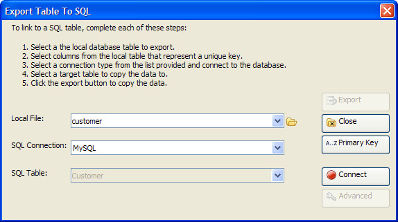

Export Table to SQL Dialog
The Export Table to SQL dialog helps you export a local Alpha Anywhere table to a back-end SQL database.

Procedure
Select the local Alpha Anywhere .DBF table to export from the Local File list or click to navigate to and select the table.
Select the SQL database type from the SQL Connection list.
Click Connect to display the Connect to Database dialog.
Navigate to and select a database in the File Name control.
Enter the other values required to access the database.
Click Test Connection.
Click OK if the connection succeeded.
Enter the name of the SQL table to create or select a table to overwrite in the SQL Table control.
Click
 to display the
Primary Key Columns
dialog.
to display the
Primary Key Columns
dialog.select one or more fields from the Table Columns list and click
 to move them (in order) to the
Primary
Key Columns list.
to move them (in order) to the
Primary
Key Columns list.Click OK to continue.
Optionally, click Advanced to display the Export Table to SQL - Advanced Settings dialog.
Click Export.
Close Close to exit.
Limitations
Desktop applications only.
See Also